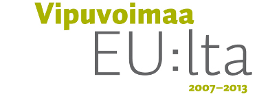

Tämä käyttöopas on tuotettu FLOSS Manuals -dokumentaatiowikissä. Toteuttajina oli työryhmä Emmi Vainio, Kalle Kuisma, Tomi Toivio ja Minna Tarkka ja piirroskuvituksesta vastasi Tytti Viljanen.
Suomenkielinen FLOSS Manuals löytyy osoitteesta: http://fi.flossmanuals.net . Jos sinulla on parannusehdotuksia tähän oppaaseen, voit päivittää sitä vapaasti wikissä.
FLOSS Manuals on opaskirjasto ja dokumentaatiowiki vapaille ja avoimen lähdekoodin ohjelmille. Alussa palvelu oli tarjolla vain englanniksi, mutta nyt se on lokalisoitu myös suomeksi, ranskaksi, persiaksi ja hollanniksi.
Lyhenne FLOSS tulee sanoista Free/Libre/Open Source Software. Suomeksi lyhenne käännetään yleensä sanoiksi Vapaat ja Avoimen Lähdekoodin Ohjelmat eli VALO. FLOSS Manualsin voisi siis suomentaa VALO-käyttöohjeiksi.
Vapaan ohjelman tunnusmerkit ovat neljä perusvapautta (joiden numerointi aloitetaan yleisen ohjelmointitavan mukaan nollasta):
FLOSS Manuals tarjoaa vapaille ohjelmille vapaita käyttöoppaita, jotka julkaistaan ilmaiseksi useimpien ohjelmien käyttämän GNU GPL -lisenssin alla.
Uusi käyttöopas tuotetaan usein kirjapyrähdyksessä, jossa ohjelmasta kiinnostuneet ihmiset kokoontuvat kirjoittamaan käyttöopasta. Kirjapyrähdys voi usein tuottaa uuden käyttöoppaan muutamassa päivässä.
FLOSS Manuals -verkosto on saanut maineen laadukkaan dokumentaation tuottajana. Sitä tukevat avainprojektit, kuten One Laptop Per Child ja Internet Archive. Kieliyhteisö laajenee nopeasti, käyttöoppaita käännetään nyt yli kahdellekymmenelle kielelle.
Vapaiden ja avoimen ohjelmien maailmassa on paljon ohjelmoijia. Usein teknisistä kirjoittajista on kuitenkin pulaa. Yleisen vitsin mukaan uusi käyttäjä yrittää käyttää avoimen lähdekoodin ohjelmaa, mutta häntä neuvotaan ohjelman keskustelupalstalla tai postilistalla lukemaan lähdekoodia.
Tämän vuoksi tarvitsemme FLOSS Manualsia. Dokumentointi ja tekninen kirjoittaminen on se alue, joka on toistaiseksi ollut heikoin avoimen lähdekoodin yhteisössä.
Ihannetilanteessa dokumentaatio vastaa tavallisten käyttäjien taitotasoa. Loppukäyttäjä ei luultavasti ole kiinnostunut käytetyn ohjelmointikielen hienouksista tai vastaavista teknisistä seikoista, jotka ovat äärimmäisen kiehtovia kehittäjille. Käyttäjä tahtoo käyttää ohjelmaa.
Niinpä dokumentaatiossa käytetyn kielen tulisi olla ymmärrettävää käyttäjille. Sitä ei tulisi kirjoittaa ohjelmointigurujen teknisellä jargonilla, kaikki dokumentaatio tulisi kirjoittaa henkilölle, joka ei ole opiskellut tietojenkäsittelytiedettä, mutta tahtoo tuottaa ohjelmiston avulla jotain.
Tarvitsemme FLOSS Manualsin kaltaisen wikin rakentaaksemme sillan koodaajan, dokumentoijan ja käyttäjän välille.
Pelkkä käyttöoppaan suomentaminen ei riitä. Sitä täytyy jatkuvasti päivittää, laajentaa ja lokalisoida sopimaan paikallisiin olosuhteisiin. Tämän vuoksi jokainen FLOSS Manualsin lokalisaatio tarvitsee kirjoittajien ja lukijoiden yhteisöä.
Erilaisia osallistujia tarvitaan: uusia ohjelmien käyttäjiä ja pitkän linjan harrastajia, teknisiä kirjoittajia, kehittäjiä, graafikoita, kääntäjiä, lokalisoijia, oikolukijoita... Kuka tahansa voi osallistua FLOSS Manualsin kehittämiseen.
Wikiin pohjautuva yhteistyö merkitsee sitä, että lukemattomien käyttäjien pienistä lisäyksistä muodostuu valtava määrä sisältöä.
FLOSS Manuals tahtoo antaa kaikille wikiin osallistuneille kunnian kirjoituksistaan, minkä vuoksi kirjoittajia pyydetään rekisteröitymään omalla nimellään.
FLOSS Manuals pyrkii luomaan ratkaisun uuden käyttäjän kohtaamaan ongelmaan: mistä löydän käyttöohjeen tälle ohjelmalle?
FLOSS Manualsin suomenkielinen lokalisaatio on avattu vuonna 2009. Tavoitteenamme on sekä suomentaa englanninkielisen sivuston käyttöohjeita että aloittaa uusien käyttöoppaiden kirjoittaminen Suomessa. Järjestämme käyttöoppaiden pohjalta myös työpajoja.
FLOSS Manualsin lokalisaatiosta vastaa Mediakulttuuriyhdistys m-cult. Lokalisaatio on toteutettu osana Medios-projektia, jossa keskitytään tukemaan avoimen lähdekoodin audiovisuaalisten työkalujen käyttöä kansalaismedian tuottamiseen. Osaprojektissa luomme työpajoja koulujen, kansalaismediakeskusten ja erilaisten käyttäjäyhteisöjen kanssa. Tarkoituksena on tuoda uusia käyttäjiä ja kirjoittajia avoimen lähdekoodin yhteisöön.
Suomen FLOSS Manuals on toteutunut osana Euroopan Sosiaalirahaston ja Uudenmaan ELY-keskuksen rahoittamaa osallistuvan ja sosiaalisen median Medios-projektia. Medios-projektin osarahoittajana on myös Helsingin Kulttuurikeskus. Metropolia Ammattikorkeakoulun koordinoiman projektin toteuttajia ovat lisäksi Helsingin Kaupunginteatteri ja m-cult.

There has been error in communication with Booktype server. Not sure right now where is the problem.
You should refresh this page.